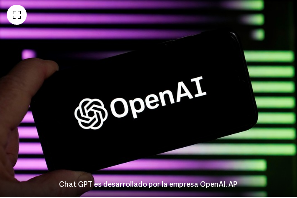

Origen ChatGPT 4
Para entender cómo usar Chat GPT 4, primero hay que comprender cuál es su origen.
En este punto es necesario distinguir entre Chat GPT, el popular chat que revolucionó Internet con su rapidez y facilidad para contestar preguntas y resolver problemas, de GPT, el modelo de inteligencia artificial que lo hace posible.
Esa tecnología, desarrollada por la empresa Open AI, está en constante crecimiento y actualización. La versión GPT 3.5 rige actualmente el funcionamiento de la versión gratuita del popular chat.
La versión GPT 4, por su parte, está disponible para quienes pagan una suscripción mensual de 20 dólares.
Modelos de OpenAI
- GPT-4: Conjunto de modelos que mejoran GPT-3.5 y pueden comprender y generar lenguaje natural o código fuente.
- GPT-3.5: Conjunto de modelos que mejoran GPT-3 y pueden comprender y generar lenguaje natural o código fuente.
- DALL-E: Modelo capaz de generar y editar imágenes a partir de una instrucción en lenguaje natural.
- Whisper: Modelo capaz de convertir audio en texto. Reconocimiento de voz. Embeddings: Conjunto de modelos capaces de convertir tex
GPT 4: ¿qué se puede hacer con este chat de inteligencia artificial?
Al igual que su predecesor, el Chat GPT 4 permite resolver dudas y consultas de todo tipo. Además, se le puede pedir que elabore textos, indicando qué reglas debe cumplir o qué estilo se desea, o que haga traducciones.
Las indicaciones del usuario son claves para alcanzar el resultado esperado. El éxito de sus intervenciones está determinado en gran parte por el ingenio de la persona encargada de preguntarle y señalarle qué debe hacer.
Esta nueva versión, además de mejorar la eficacia en la resolución de las consultas, suma una nueva función: no sólo es capaz de comprender texto, sino que también puede hacer lo mismo con imágenes.
Chat GPT 4: ¿cómo usar gratis este chat de inteligencia artificial?
Como se aclaró anteriormente, GPT 4 es una tecnología desarrollada por la empresa Open AI. Por esa razón, si bien para utilizarlo en su web hay que suscribirse a la opción Premium, hay una alternativa para aprovechar sus beneficios totalmente gratis.
Bing, el buscador de la empresa Microsoft, anunció que funciona con esta poderosa herramienta. Para probarla sólo hay que ingresar en www.bing.com/chat e iniciar la conversación. Quienes lo utilicen a través del navegador Microsoft Edge pueden acceder a funciones exclusivas como el generador de imágenes.